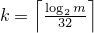
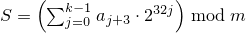

A linear_congruential_engine random number engine produces unsigned integer random numbers. The state xi of a linear_congruential_engine object x is of size 1 and consists of a single integer. The transition algorithm is a modular linear function of the form TA(xi) = (a · xi + c) mod m; the generation algorithm is GA(xi) = xi+1 .
template<class UIntType, UIntType a, UIntType c, UIntType m>
class linear_congruential_engine{
public:
// types
using result_type = UIntType;
// engine characteristics
static constexpr result_type multiplier = a;
static constexpr result_type increment = c;
static constexpr result_type modulus = m;
static constexpr result_type min() { return c == 0u ? 1u: 0u; }
static constexpr result_type max() { return m - 1u; }
static constexpr result_type default_seed = 1u;
// constructors and seeding functions
explicit linear_congruential_engine(result_type s = default_seed);
template<class Sseq> explicit linear_congruential_engine(Sseq& q);
void seed(result_type s = default_seed);
template<class Sseq> void seed(Sseq& q);
// generating functions
result_type operator()();
void discard(unsigned long long z);
};
If the template parameter m is 0, the modulus m used throughout this section [rand.eng.lcong] is numeric_limits<result_type>::max() plus 1. [ Note: m need not be representable as a value of type result_type. — end note ]
If the template parameter m is not 0, the following relations shall hold: a < m and c < m.
The textual representation consists of the value of xi.
explicit linear_congruential_engine(result_type s = default_seed);
Effects: Constructs a linear_congruential_engine object. If c mod m is 0 and s mod m is 0, sets the engine's state to 1, otherwise sets the engine's state to s mod m.
template<class Sseq> explicit linear_congruential_engine(Sseq& q);
Effects: Constructs a linear_congruential_engine object. With  and a an array (or equivalent) of length k + 3, invokes q.generate(a+0, a+k+3) and then computes . If c mod m is 0 and S is 0, sets the engine's state to 1, else sets the engine's state to S.